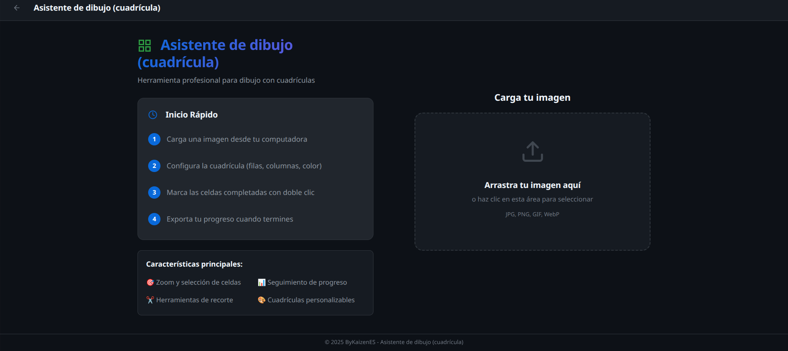
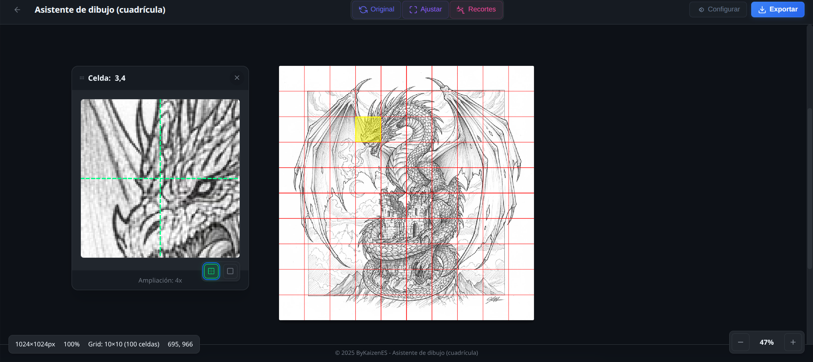

Asistente de dibujo (cuadrícula) es una extensión de navegador diseñada específicamente para artistas, ilustradores y dibujantes que buscan mejorar la precisión y proporción en sus trabajos. Esta herramienta profesional te permite superponer cuadrículas completamente personalizables sobre cualquier imagen en tu navegador web, facilitando el proceso de dibujo y copia proporcional.
✦ Características Principales
- Cuadrículas Personalizables: Configura el número de filas y columnas según tus necesidades (de 1x1 hasta 100x100).
- Control de Visualización: Ajusta el grosor de las líneas, colores y opacidad para adaptar la cuadrícula a tu preferencia.
- Gestión de Celdas: Marca las celdas que ya has dibujado para mantener un seguimiento visual de tu progreso.
- Etiquetas Numeradas: Activa números en filas y columnas para identificar fácilmente cada sección de tu dibujo.
- Modo Zoom: Amplía celdas específicas para trabajar con mayor detalle en secciones pequeñas.
- Navegación con Teclado: Usa las flechas del teclado para moverte entre celdas y la tecla Enter para marcarlas como completadas.
- Herramienta de Recorte: Recorta y ajusta tus imágenes con precisión antes de aplicar la cuadrícula.
- Filtro Blanco y Negro: Convierte tu imagen de referencia a escala de grises para facilitar el estudio de valores.
- Control de Opacidad: Ajusta la transparencia de la imagen y la cuadrícula de forma independiente.
- Almacenamiento Automático: Guarda tu progreso automáticamente para continuar donde lo dejaste.
- Exportación de Imágenes: Descarga tus imágenes con la cuadrícula aplicada en formato PNG de alta calidad.
- Interfaz Intuitiva: Diseño moderno y profesional con controles accesibles.
- Totalmente Gratuito: Sin suscripciones, sin anuncios, sin limitaciones.

Interfaz principal para cargar la imagen (portada)
◆ ¿Para quién es esta herramienta?
- Artistas tradicionales: Que desean trasladar dibujos físicos al formato digital manteniendo proporciones exactas.
- Ilustradores digitales: Que necesitan copiar referencias con precisión milimétrica.
- Estudiantes de arte: Aprendiendo técnicas de proporción y composición.
- Diseñadores: Que trabajan con imágenes de referencia y necesitan mantener dimensiones exactas.
- Retratistas: Que buscan capturar proporciones faciales con exactitud.
▸ ¿Cómo funciona?
- Instala la extensión desde la Chrome Web Store.
- Navega a cualquier imagen en tu navegador (puede ser de Google Imágenes, Pinterest, ArtStation, etc.).
- Haz clic en el icono de la extensión en tu barra de herramientas.
- Selecciona "Abrir imagen en visor" para comenzar a trabajar.
- Configura tu cuadrícula ajustando filas, columnas, colores y grosor.
- Marca las celdas que vayas completando para seguir tu progreso.
- Exporta tu trabajo cuando hayas terminado o guárdalo para continuar después.

Seguimiento de progreso con celdas marcadas y zoom de detalle
● Casos de Uso Reales
- Método de cuadrícula tradicional: Técnica clásica usada por artistas durante siglos para ampliar o copiar imágenes con precisión.
- Estudio de anatomía: Practica proporciones corporales y faciales usando referencias fotográficas.
- Pixel art: Crea diseños pixel a pixel con una cuadrícula perfectamente alineada.
- Mosaicos y murales: Planifica proyectos de gran escala dividiendo la imagen en secciones manejables.
- Caricaturas y cómics: Mantén consistencia entre paneles y viñetas.
■ Privacidad y Seguridad
Tu privacidad es nuestra prioridad. Asistente de dibujo (cuadrícula) no recopila ningún dato personal, no envía información a servidores externos y todo tu trabajo se almacena localmente en tu navegador. Tus imágenes y progreso permanecen 100% privados en tu dispositivo.